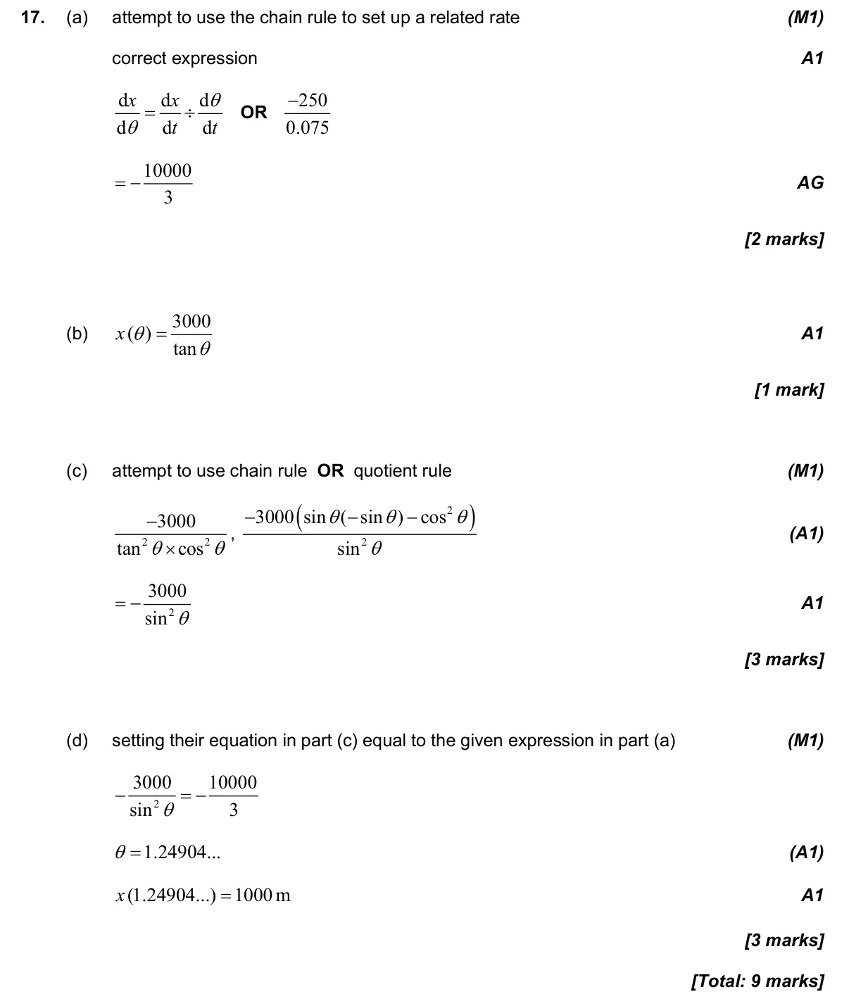

9 marks P1 TZ1 Calculator 3.8 The unit circle, the Pythagorean identity, the ambiguous case and graphical trigonometric equations5.9 Further differentiation: standard derivatives, chain, product and quotient rules, related rates3.3 Applications of trigonometry3.2 2D and 3D trigonometry, sine rule, cosine rule and area Question Hide breakdown abcd Markscheme 